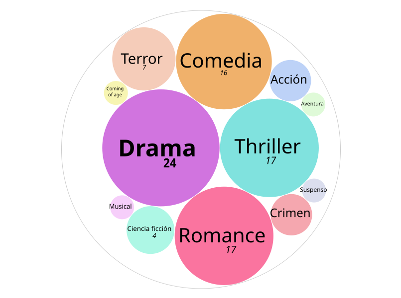

Trabajo práctico - Visualización de Información
Datos sobre películas vistas y valoradas en Letterboxd
Este trabajo analiza las películas que vi y valoré en Letterboxd. A partir de estos datos busco visualizar mis hábitos de consumo, los géneros que más aparecen y cómo se comparan mis valoraciones con las del resto de los usuarios.
Géneros de las películas vistas
El gráfico muestra la cantidad de películas vistas según su género. El tamaño de cada círculo representa la cantidad de películas que pertenece a cada género.

Visualización realizada con RAWGraphs.
Este gráfico compara la puntuación que le di a cada película con la valoración promedio de los usuarios de Letterboxd. En general, mi valoración tiende a ser mayor que la valoración promedio de los usuarios.

Visualización realizada con Datawrapper.